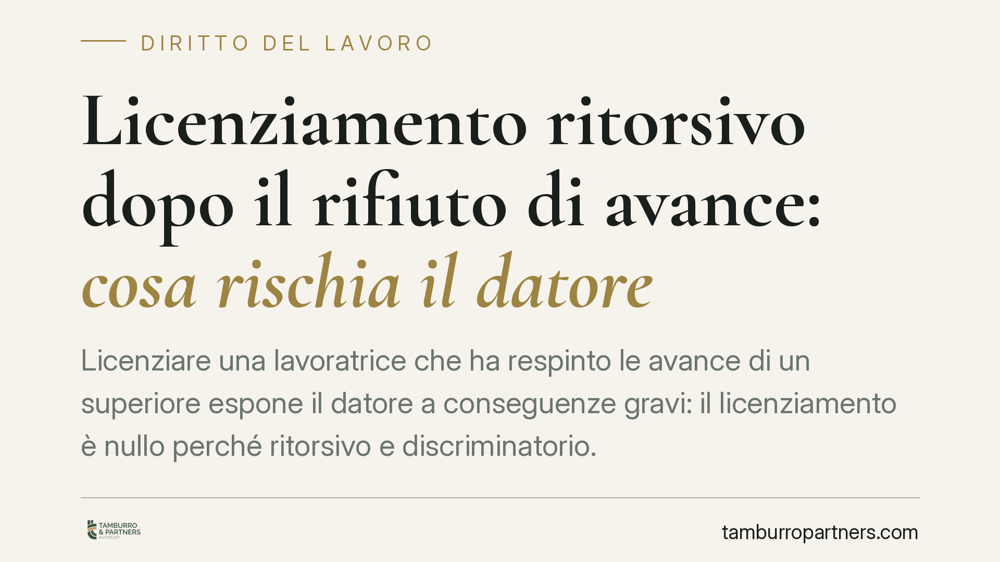
Licenziamento ritorsivo dopo il rifiuto di avance: cosa rischia il datore
Licenziare una lavoratrice che ha respinto le avance di un superiore espone il datore a conseguenze gravi: il licenziamento è nullo perché ritorsivo e discriminatorio. Ne derivano …
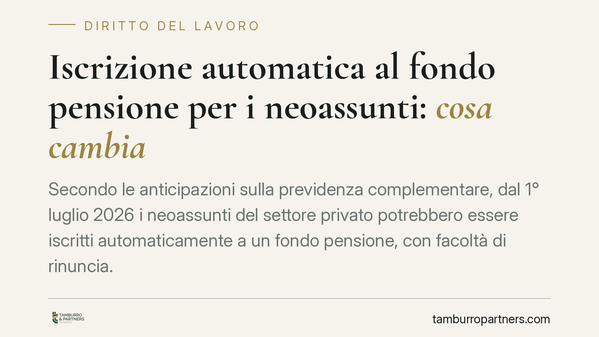
Iscrizione automatica al fondo pensione per i neoassunti: cosa cambia
Secondo le anticipazioni sulla previdenza complementare, dal 1° luglio 2026 i neoassunti del settore privato potrebbero essere iscritti automaticamente a un fondo pensione, con fac…
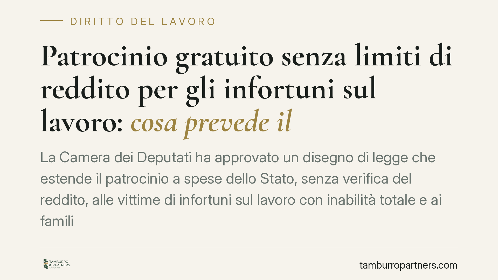
Patrocinio gratuito senza limiti di reddito per gli infortuni sul lavoro: cosa prevede il ddl
La Camera dei Deputati ha approvato un disegno di legge che estende il patrocinio a spese dello Stato, senza verifica del reddito, alle vittime di infortuni sul lavoro con inabilit…
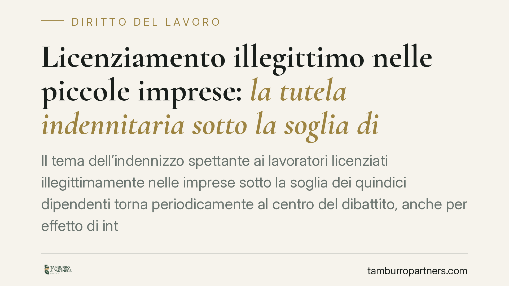
Licenziamento illegittimo nelle piccole imprese: la tutela indennitaria sotto la soglia dimensionale
Il tema dell'indennizzo spettante ai lavoratori licenziati illegittimamente nelle imprese sotto la soglia dei quindici dipendenti torna periodicamente al centro del dibattito, anch…
Pagamenti errati in busta paga: quando l'azienda può recuperare le somme
L'azienda che versa per sbaglio somme non dovute in busta paga ha diritto a riaverle. Ma non sull'intero importo lordo: il recupero è limitato al netto che il lavoratore ha realmen…
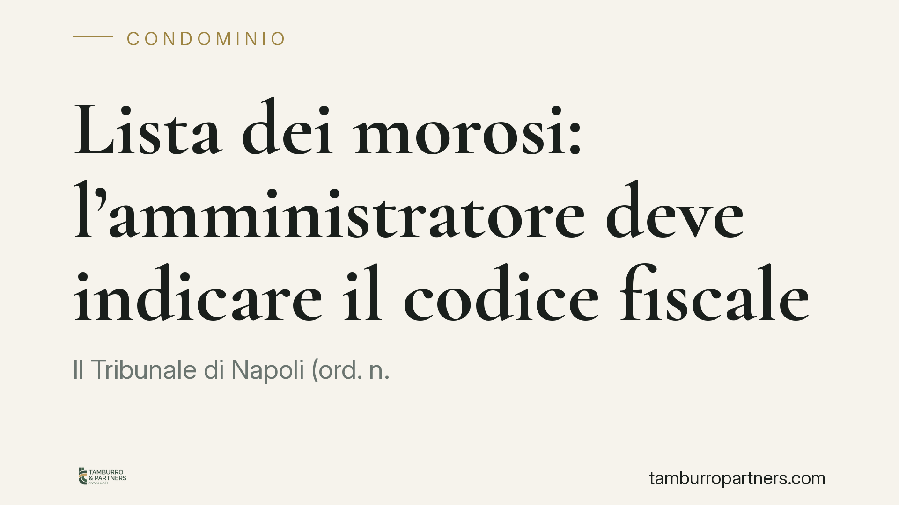
Lista dei morosi: l'amministratore deve indicare il codice fiscale
Il Tribunale di Napoli (ord. n. 5161/2026) ha chiarito che l'amministratore, richiesto dal creditore del condominio, deve fornire l'elenco dei morosi completo di nome, codice fisca…
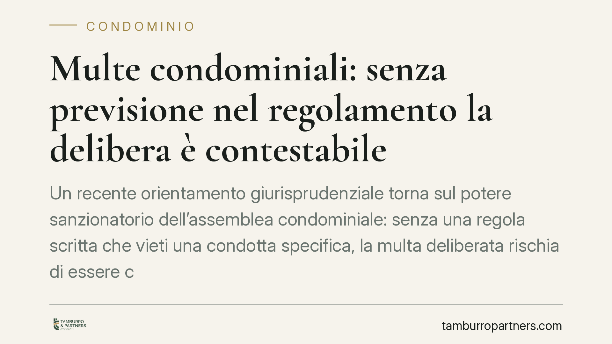
Multe condominiali: senza previsione nel regolamento la delibera è contestabile
Un recente orientamento giurisprudenziale torna sul potere sanzionatorio dell'assemblea condominiale: senza una regola scritta che vieti una condotta specifica, la multa deliberata…
LOAgri: il lavoro occasionale agricolo dal 2026
Il lavoro occasionale agricolo torna al centro dell'attenzione in vista del 2026. Lo strumento consente alle aziende agricole di impiegare lavoratori per prestazioni saltuarie entr…
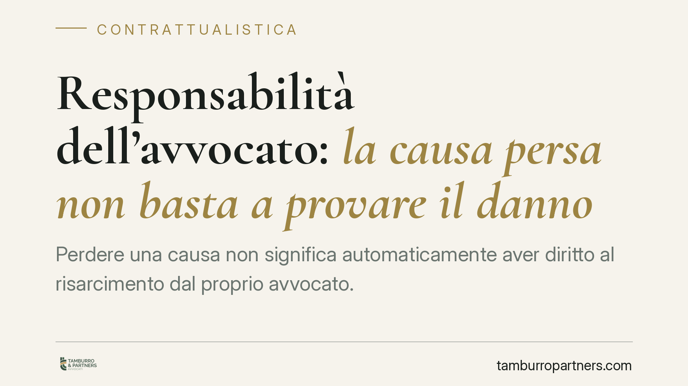
Responsabilità dell'avvocato: la causa persa non basta a provare il danno
Perdere una causa non significa automaticamente aver diritto al risarcimento dal proprio avvocato. La Corte di Cassazione ribadisce un principio consolidato: il cliente deve dimost…
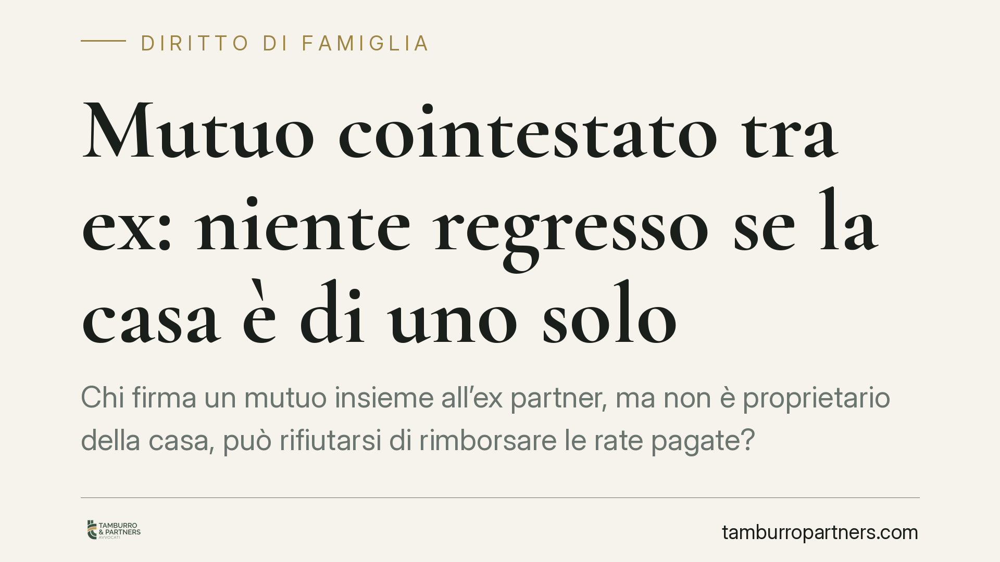
Mutuo cointestato tra ex: niente regresso se la casa è di uno solo
Chi firma un mutuo insieme all'ex partner, ma non è proprietario della casa, può rifiutarsi di rimborsare le rate pagate? Il Tribunale di Palermo risponde di sì: se la cointestazio…
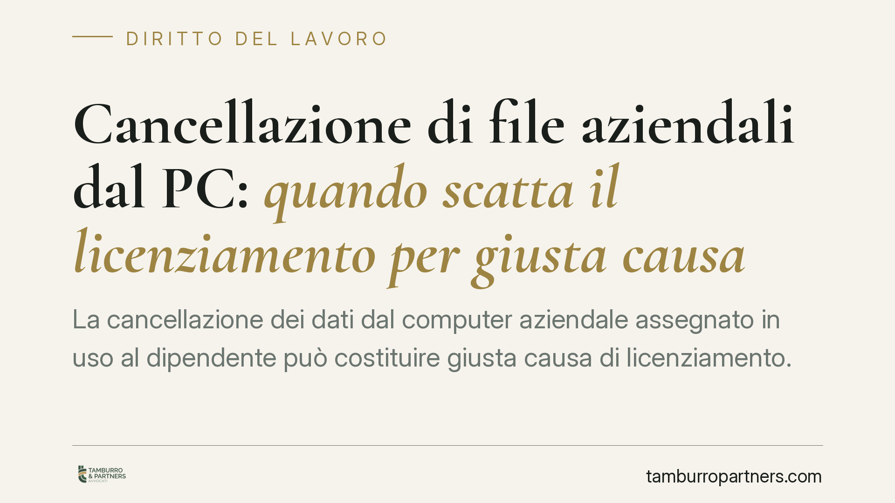
Cancellazione di file aziendali dal PC: quando scatta il licenziamento per giusta causa
La cancellazione dei dati dal computer aziendale assegnato in uso al dipendente può costituire giusta causa di licenziamento. Una recente pronuncia di merito ribadisce che la condo…
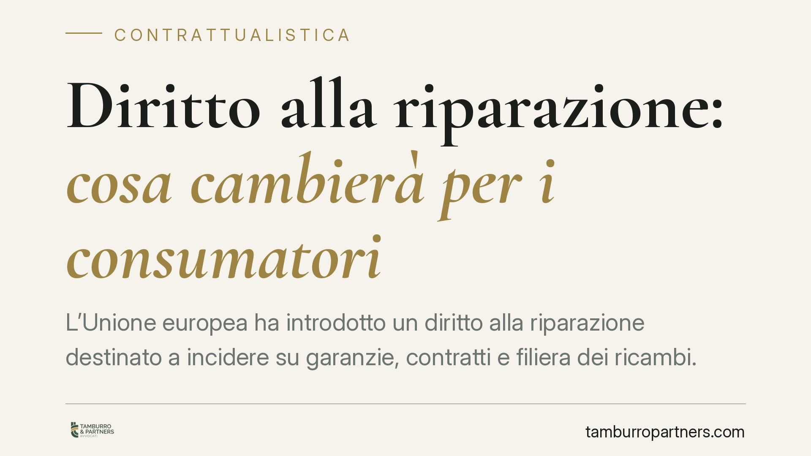
Diritto alla riparazione: cosa cambierà per i consumatori
L'Unione europea ha introdotto un diritto alla riparazione destinato a incidere su garanzie, contratti e filiera dei ricambi. La Direttiva (UE) 2024/1799 va recepita entro il 31 lu…
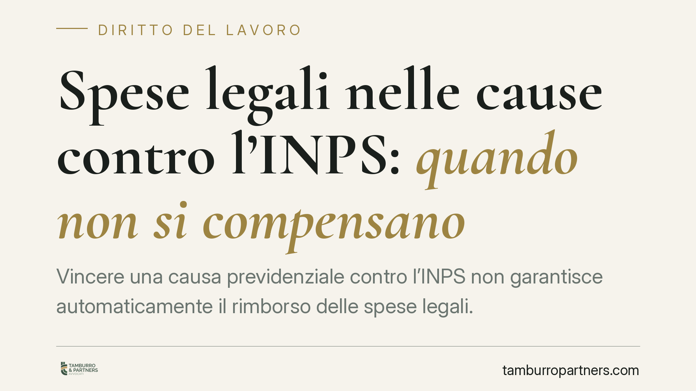
Spese legali nelle cause contro l'INPS: quando non si compensano
Vincere una causa previdenziale contro l'INPS non garantisce automaticamente il rimborso delle spese legali. Il giudice può compensarle, ma solo in casi gravi ed eccezionali e con …
Quota 100 e cumulo redditi: la contestazione INPS e i limiti al recupero
L'INPS avvia recuperi nei confronti dei titolari di Quota 100 che hanno percepito redditi da lavoro in violazione del divieto di cumulo. Un orientamento giurisprudenziale, i cui es…
Recupero crediti in condominio: quando viola la privacy
Affiggere in bacheca o diffondere via chat i nomi dei condòmini morosi è una prassi diffusa quanto rischiosa. La divulgazione dei dati a una platea indeterminata viola la normativa…
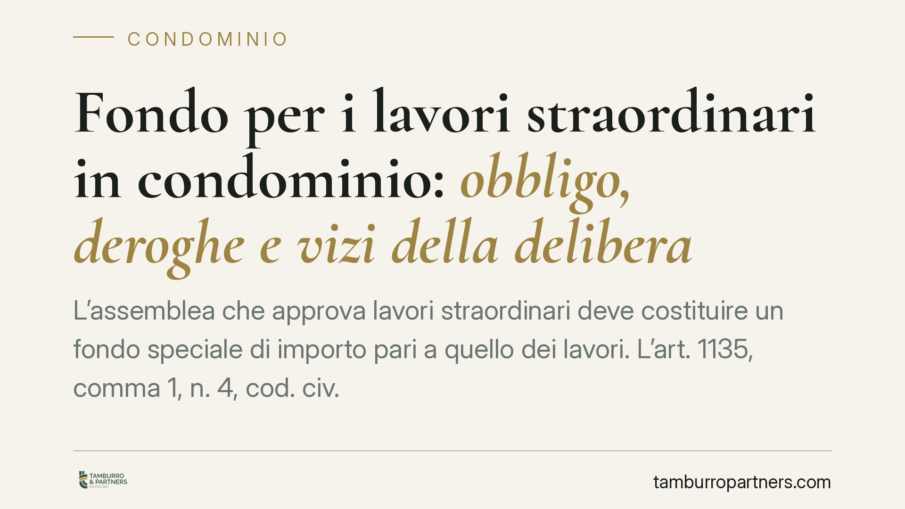
Fondo per i lavori straordinari in condominio: obbligo, deroghe e vizi della delibera
L'assemblea che approva lavori straordinari deve costituire un fondo speciale di importo pari a quello dei lavori. L'art. 1135, comma 1, n. 4, cod. civ. lo impone, ma la portata de…
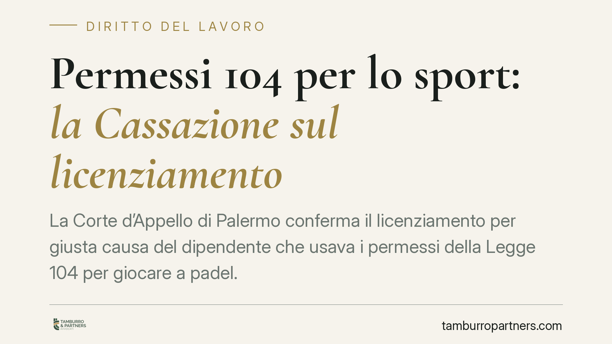
Permessi 104 per lo sport: la Cassazione sul licenziamento
La Corte d'Appello di Palermo conferma il licenziamento per giusta causa del dipendente che usava i permessi della Legge 104 per giocare a padel. La decisione legittima il controll…
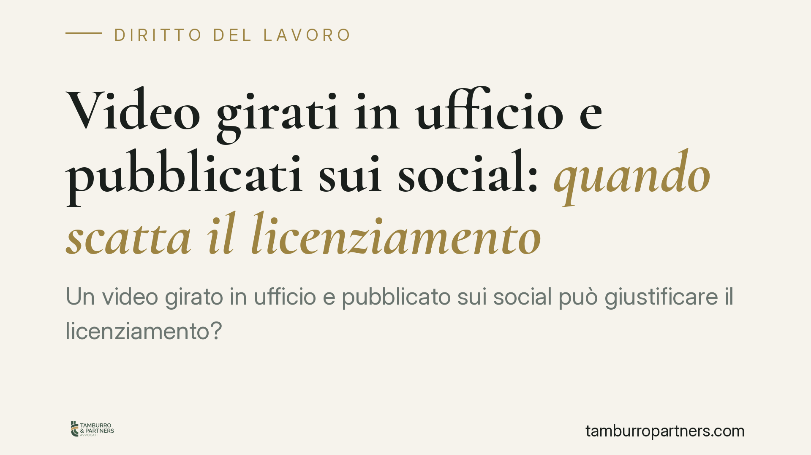
Video girati in ufficio e pubblicati sui social: quando scatta il licenziamento
Un video girato in ufficio e pubblicato sui social può giustificare il licenziamento? La questione tocca sia il datore, che deve valutare proporzionalità e prova, sia il lavoratore…
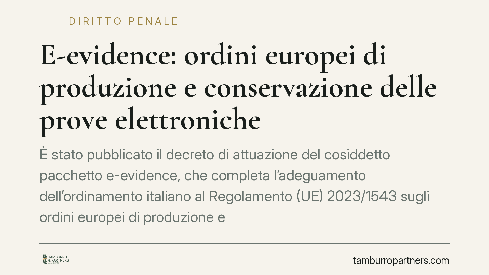
E-evidence: ordini europei di produzione e conservazione delle prove elettroniche
È stato pubblicato il decreto di attuazione del cosiddetto pacchetto e-evidence, che completa l'adeguamento dell'ordinamento italiano al Regolamento (UE) 2023/1543 sugli ordini eur…
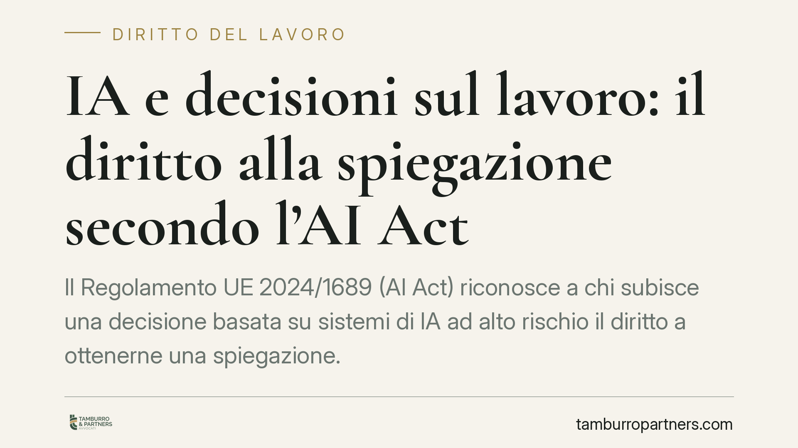
IA e decisioni sul lavoro: il diritto alla spiegazione secondo l'AI Act
Il Regolamento UE 2024/1689 (AI Act) riconosce a chi subisce una decisione basata su sistemi di IA ad alto rischio il diritto a ottenerne una spiegazione. Per i datori di lavoro ch…
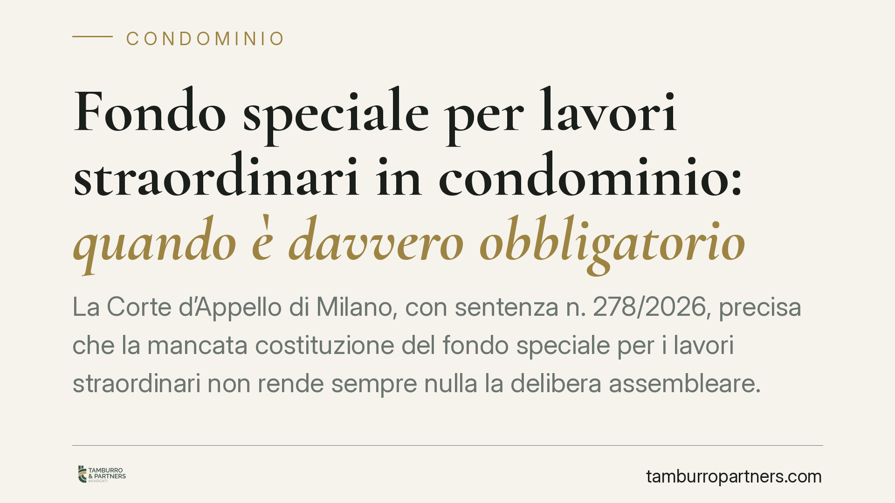
Fondo speciale per lavori straordinari in condominio: quando è davvero obbligatorio
La Corte d'Appello di Milano, con sentenza n. 278/2026, precisa che la mancata costituzione del fondo speciale per i lavori straordinari non rende sempre nulla la delibera assemble…
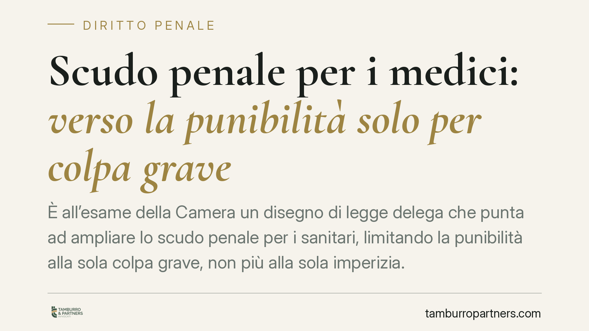
Scudo penale per i medici: verso la punibilità solo per colpa grave
È all'esame della Camera un disegno di legge delega che punta ad ampliare lo scudo penale per i sanitari, limitando la punibilità alla sola colpa grave, non più alla sola imperizia…
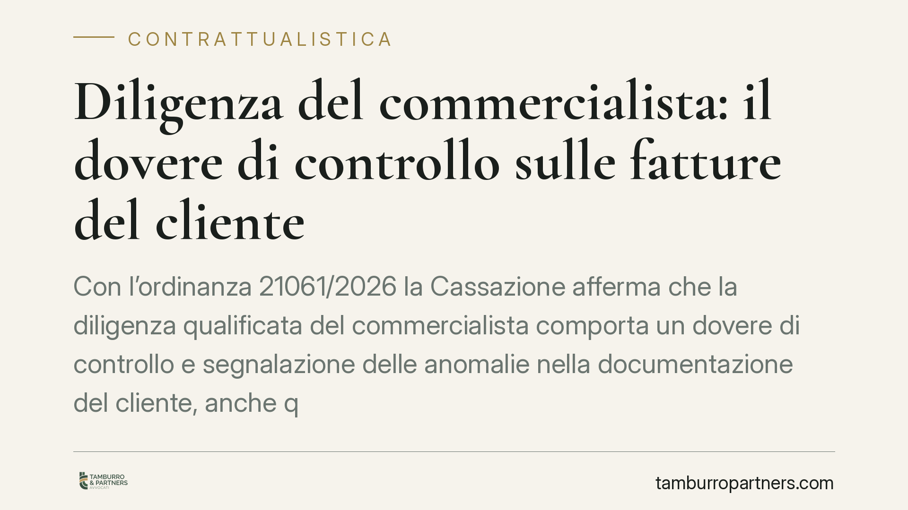
Diligenza del commercialista: il dovere di controllo sulle fatture del cliente
Con l'ordinanza 21061/2026 la Cassazione afferma che la diligenza qualificata del commercialista comporta un dovere di controllo e segnalazione delle anomalie nella documentazione …
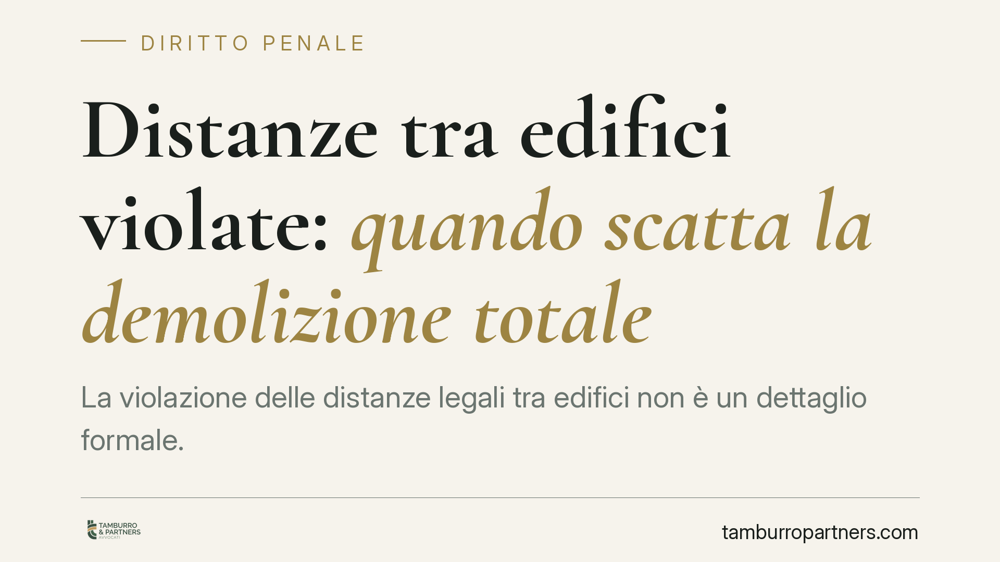
Distanze tra edifici violate: quando scatta la demolizione totale
La violazione delle distanze legali tra edifici non è un dettaglio formale. Quando il vizio è sostanziale e tocca la collocazione stessa del fabbricato, la giurisprudenza amministr…
Video aziendali come prova: controlli difensivi e false timbrature
Le riprese effettuate in azienda possono essere utilizzate come prova per smascherare le false timbrature? Una recente pronuncia della Seconda Sezione penale della Cassazione torna…
Assegno di mantenimento pagato in eccesso: si può chiedere la restituzione?
Chi versa un assegno di mantenimento più alto del dovuto può chiederne la restituzione quando l'importo viene poi ridotto? La giurisprudenza prevalente dice di no: le somme destina…
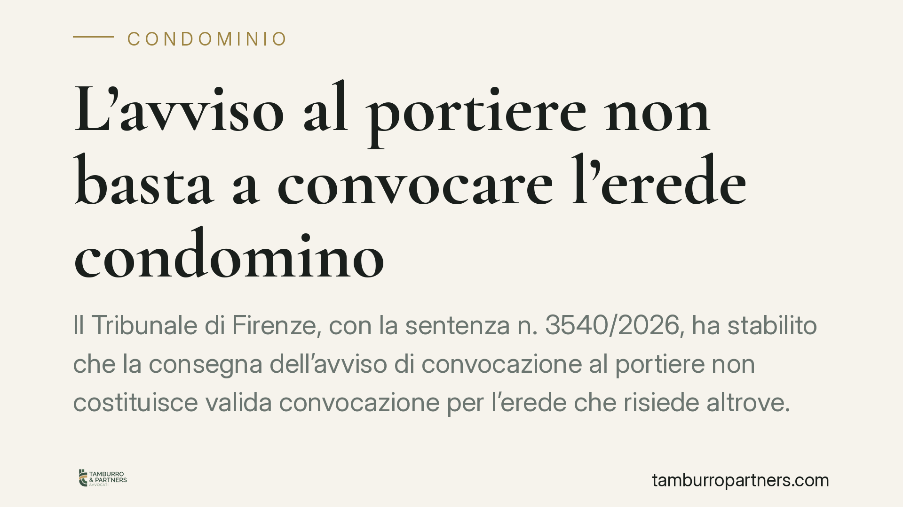
L'avviso al portiere non basta a convocare l'erede condomino
Il Tribunale di Firenze, con la sentenza n. 3540/2026, ha stabilito che la consegna dell'avviso di convocazione al portiere non costituisce valida convocazione per l'erede che risi…
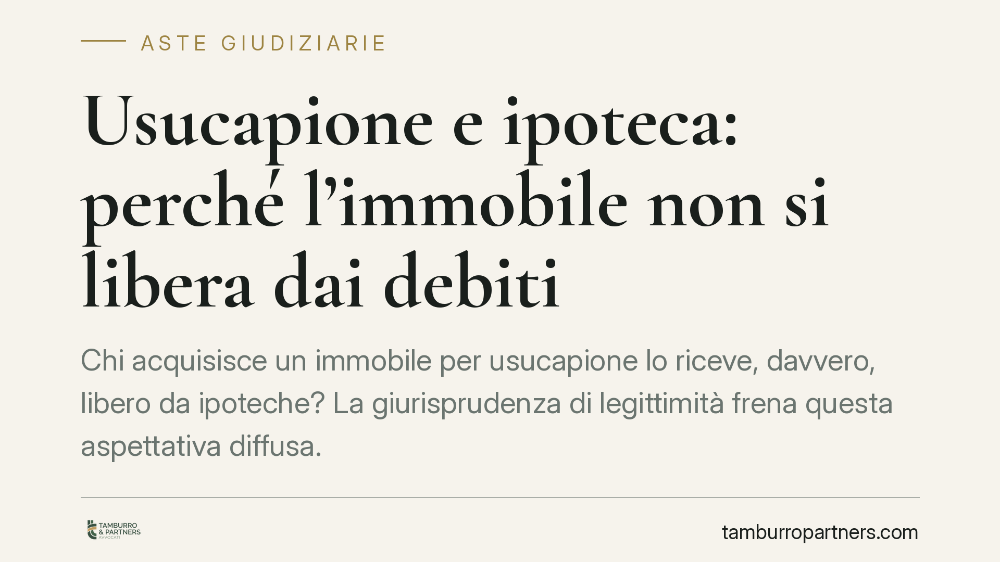
Usucapione e ipoteca: perché l'immobile non si libera dai debiti
Chi acquisisce un immobile per usucapione lo riceve, davvero, libero da ipoteche? La giurisprudenza di legittimità frena questa aspettativa diffusa. La sentenza che accerta l'usuca…
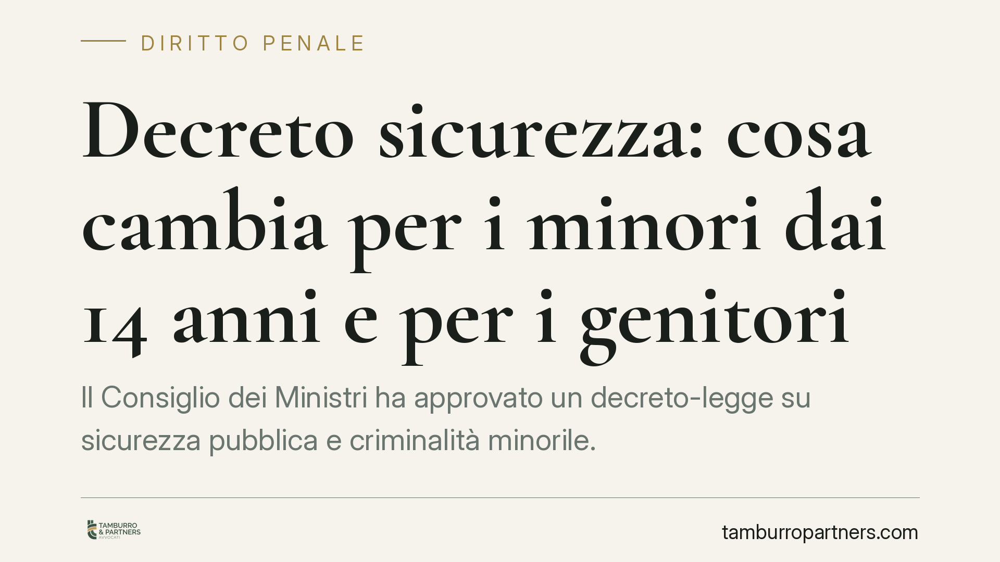
Decreto sicurezza: cosa cambia per i minori dai 14 anni e per i genitori
Il Consiglio dei Ministri ha approvato un decreto-legge su sicurezza pubblica e criminalità minorile. Cambiano l'accertamento dell'imputabilità dai 14 anni, arrivano sanzioni per i…
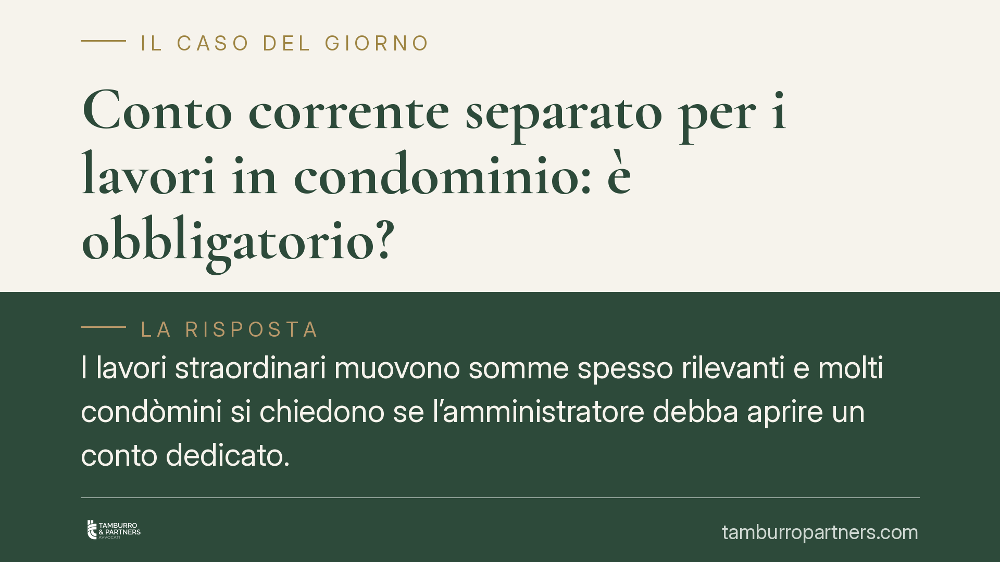
Conto corrente separato per i lavori in condominio: è obbligatorio?
I lavori straordinari muovono somme spesso rilevanti e molti condòmini si chiedono se l'amministratore debba aprire un conto dedicato. La legge impone un conto intestato al condomi…

Cadute su scale bagnate: il condominio paga anche se la pulizia è in appalto
Il condominio è custode delle parti comuni ex art. 2051 c.c.: appaltare le pulizie non sposta la responsabilità verso il danneggiato. Solo rivalsa sull'appaltatore.

RUNTS: chiarimenti Modello D 2024 per enti del terzo settore
Il Ministero del Lavoro chiarisce l'uso del Modello D semplificato per gli ETS con entrate inferiori a 220.000 euro.

Licenziamento disciplinare: contestazione specifica e tempestiva
La Cassazione ribadisce: contestazione non specifica = nullità del licenziamento. Implicazioni operative per HR.

Clausole vessatorie B2B: la nuova lettura del Tribunale di Milano
Anche tra imprese, una clausola di limitazione di responsabilità non specificamente approvata può essere abusiva.

Bonus condominiali: ripartizione spese e delibera assembleare
Con il restringimento delle agevolazioni, le assemblee tornano a deliberare nuovi criteri di ripartizione.

5x1000: nuove regole per le ricevute di rendicontazione
L'Agenzia delle Entrate aggiorna lo schema di rendicontazione. Cosa devono fare gli enti beneficiari entro l'anno.

Ispezione INL: come gestire la richiesta documentale
I tempi di risposta, i documenti obbligatori, i margini di interlocuzione. Checklist operativa per HR.